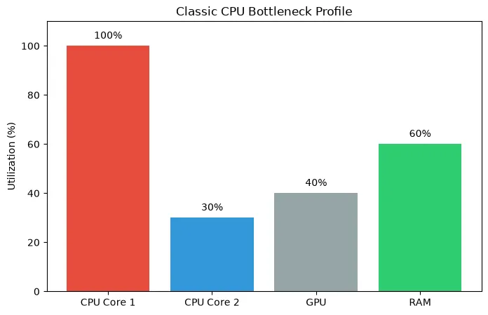
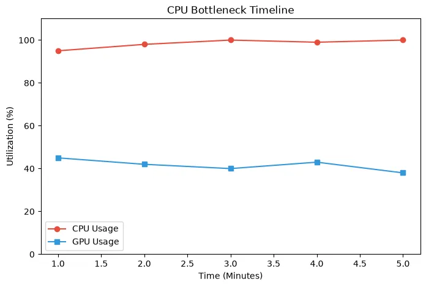
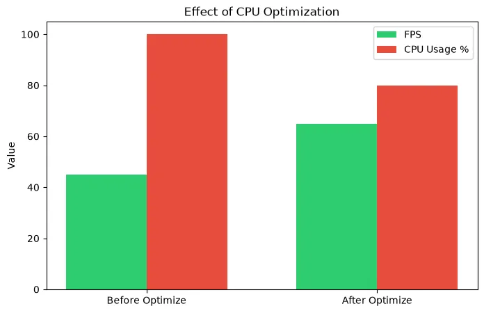

How to Reduce CPU Bottleneck in Gaming: 10 Proven Ways
Experiencing low GPU usage and stuttering? Your CPU might be limiting your GPU. Learn what a CPU bottleneck is, its symptoms, and 10 practical ways to fix it without immediately buying new hardware.
When you build or buy a gaming PC, you expect your hardware to work together seamlessly to deliver high frame rates. But what happens when your graphics card (GPU) isn't running at full speed, and your game starts stuttering? This is often the classic sign of a CPU bottleneck.
In this comprehensive guide, we will explain exactly how to reduce a CPU bottleneck, common symptoms to look for, and when a CPU upgrade is actually necessary. Before spending money, there are numerous software adjustments and optimizations you can try.
Quick Answer / TL;DR
To reduce a CPU bottleneck in gaming, you must either decrease the workload on your CPU or increase the workload on your GPU to balance the system. The most effective methods include capping your frame rate, closing background applications, increasing gaming resolution, turning down CPU-heavy graphics settings (like crowd density or draw distance), and ensuring your CPU isn't thermal throttling.
What is a CPU Bottleneck?
A CPU bottleneck occurs when your central processing unit (CPU) is not fast enough to process game logic, physics, and draw calls at the same rate that your graphics processing unit (GPU) can render the actual frames. In simpler terms: the CPU is limiting the GPU.
Think of it like a kitchen. The CPU is the chef preparing the ingredients, and the GPU is the oven baking the pizzas. If the oven (GPU) can bake 100 pizzas an hour, but the chef (CPU) can only prepare 60 pizzas an hour, the oven will spend a lot of time sitting empty. That 40-pizza deficit is your bottleneck.

Common CPU Bottleneck Symptoms
How do you know if you actually have a CPU bottleneck? Look for these symptoms while gaming:
- Low GPU Utilization: Your GPU usage (checked via Task Manager or MSI Afterburner) stays well below 90%, often hovering around 40-70%.
- High CPU Utilization: Your overall CPU usage is very high, or more importantly, one or two specific CPU cores are pinned at 90-100% utilization.
- Stuttering and Low 1% Lows: The game feels jerky. Even if the average FPS is acceptable, the frame pacing is inconsistent, leading to noticeable stuttering.
- Changing Resolution Does Nothing: If dropping from 1440p to 1080p does not increase your frame rate at all, you are heavily CPU limited.

How to Confirm a CPU Bottleneck
Before making changes, verify the issue. You can use our PC Bottleneck Calculator to get an estimate of how your specific CPU and GPU pair together at your chosen resolution. While the calculator provides a solid baseline estimate, you should verify the result using real-world monitoring.
To verify: download software like MSI Afterburner or use the Xbox Game Bar overlay (Windows Key + G). Play your most demanding game for 10 minutes. If the GPU usage refuses to climb above 85% and your frame rate is lower than you want, a CPU limit is the likely culprit.
10 Proven Ways to Reduce a CPU Bottleneck
If you've confirmed your CPU is struggling to keep up, here are 10 practical ways to fix a CPU bottleneck.
1. Increase the Gaming Resolution
This sounds counterintuitive, but it works. If you are playing at 1080p and your CPU is bottlenecking your powerful GPU, try increasing the resolution to 1440p or 4K. Higher resolutions put significantly more strain on the GPU while the CPU workload remains mostly the same. This won't increase your FPS, but it will shift the bottleneck to the GPU, making the game look much better while stabilizing frame pacing.
2. Lower CPU-Heavy Graphics Settings
Not all graphics settings affect the GPU. Some heavily impact the CPU. To reduce CPU bottleneck gaming issues, lower the following settings:
- Draw Distance / View Distance: Determines how far away objects are rendered.
- Crowd Density / Population: Extremely CPU intensive in open-world games (e.g., Cyberpunk 2077, GTA V).
- Physics / Destruction: Calculating falling debris or complex water physics hits the CPU hard.
- Shadow Quality: Often requires the CPU to calculate shadow mapping before the GPU renders it.
3. Cap Your Frame Rate (FPS Cap)
If your CPU is bouncing between 70% and 100% usage, causing wild frame rate fluctuations and stuttering, capping your FPS can be a lifesaver. If your PC fluctuates between 80 FPS and 120 FPS, use the in-game settings or NVIDIA Control Panel / AMD Adrenalin to cap the frame rate at a stable 75 FPS or 80 FPS. This gives the CPU breathing room, resulting in a much smoother experience.

4. Close Background Applications
Your CPU has a limited number of cores and threads. If you have Discord, Spotify, Google Chrome (with 20 tabs open), OBS Studio, and game launchers running in the background, they are stealing vital CPU cycles from your game. Close anything you don't strictly need before launching a heavy game.
5. Check CPU Temperatures (Thermal Throttling)
Is your CPU actually too slow, or is it just too hot? Modern processors will automatically slow down (thermal throttle) to prevent damage if they get too hot. Check your temperatures. If your CPU is hitting 95°C+ while gaming, it is slowing itself down. Clean the dust out of your PC case, reapply thermal paste, or upgrade your CPU cooler.
6. Enable XMP/EXPO for Your RAM
The CPU has to constantly pull data from your system RAM. If your RAM is running slowly, the CPU spends time waiting for data. Ensure XMP (Intel) or EXPO/DOCP (AMD) is enabled in your BIOS so your RAM runs at its advertised speed, rather than the slow default speeds. This can provide a massive boost in CPU-limited scenarios.
7. Update BIOS, Chipset, and GPU Drivers
Outdated motherboard BIOS versions or missing chipset drivers can cause severe performance issues and poor core utilization, especially on newer architectures like AMD Ryzen processors with 3D V-Cache or Intel CPUs with P-cores and E-cores. Keep your motherboard and GPU drivers up to date.
8. Optimize Windows Power Settings
Ensure Windows is not artificially limiting your CPU. Go to the Control Panel > Hardware and Sound > Power Options, and ensure your PC is set to "Balanced" or "High Performance." "Power Saver" mode will severely restrict CPU clock speeds.
9. Avoid Frame Generation if Heavily CPU Limited
Technologies like DLSS 3 Frame Generation or AMD FSR 3 generate new frames, but they still require a base level of CPU performance to function smoothly. If your CPU is already severely choked, turning on Frame Generation might actually increase input lag without providing the smooth visual experience you expect.
10. Overclocking (With Caution)
If you have an unlocked processor (Intel 'K' series or AMD Ryzen), a robust motherboard, and an excellent cooler, you can manually increase the CPU clock speeds via overclocking. However, this is an advanced step, increases heat and power draw, and usually only yields a 5-10% performance gain.
When is a CPU Upgrade Actually Necessary?
Important Note: Do not claim that every CPU bottleneck can be fixed through software.
If you have tried all the steps above, closed all background apps, capped your frame rate, and you are still experiencing horrible stuttering in modern games, your hardware might simply be too old. For example, pairing a 10-year-old quad-core Intel i5-4690K with a modern RTX 4070 is going to result in a massive bottleneck that no software tweak can fix. The architectural limitations of older CPUs simply cannot feed modern GPUs.
If your CPU is constantly pegged at 100% across all cores in modern titles, and you cannot reach a playable frame rate (e.g., 60 FPS) no matter what graphics settings you use, it is time to plan a platform upgrade.
How the Bottleneck Calculator Can Help
Unsure if your pairing is balanced? Use our CPU GPU Bottleneck Calculator to check your exact hardware configuration. By entering your CPU, GPU, and target resolution, the calculator can help you estimate if you are facing a severe mismatch before you buy a new game or a new monitor.
Frequently Asked Questions
What is a CPU bottleneck?
A CPU bottleneck happens when a processor is not fast enough to process the game's data, causing the graphics card to wait for instructions. This results in the GPU not being fully utilized and often causes stuttering.
Can increasing resolution reduce a CPU bottleneck?
Yes. Increasing the resolution from 1080p to 1440p or 4K puts a much heavier workload on the GPU. While this doesn't magically make the CPU faster, it shifts the bottleneck to the GPU, allowing for better visual quality without further hurting frame rates.
Is 100% CPU usage bad?
In gaming, seeing your CPU consistently at 100% usage usually indicates a severe bottleneck. It leads to input lag, stuttering, and an inability to run background apps. It is not "bad" in the sense that it will break the computer, but it is bad for gaming performance.
How to tell if CPU is bottlenecking GPU?
Monitor your usage while gaming. If your GPU usage is consistently below 85-90% and your frame rate is uncapped, but your CPU usage (or specific CPU core usage) is very high, your CPU is bottlenecking the GPU.
Will upgrading RAM fix a CPU bottleneck?
If you currently have very slow RAM or only a single stick of RAM (single-channel mode), upgrading to a fast, dual-channel RAM kit can significantly improve CPU performance and reduce the bottleneck. However, it won't fix an ancient, weak processor.
Final Takeaway
Learning how to fix a CPU bottleneck is about balance. By understanding what a CPU bottleneck is and applying practical fixes like capping frame rates, lowering specific settings, and managing background tasks, you can squeeze much more life out of your current processor. And when the time finally comes for a new PC build, always research the best CPU GPU combinations to ensure a balanced system from day one.